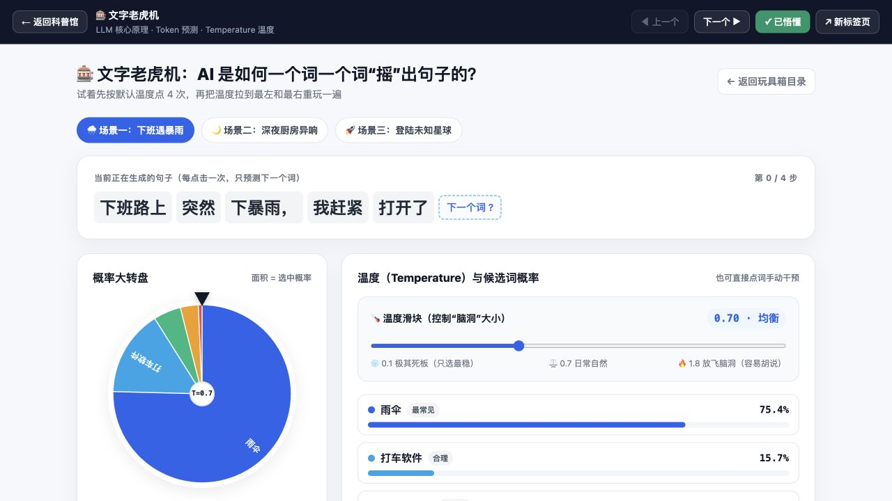

Website / interactive learning
AI Interactive Playground
Explore AI by interacting
Explore models, training, inference, RAG and agents through sliders, buttons and small interactive games.

What it is
Browser-based teaching simulations of AI principles. Probability wheels, attention spotlights, GPU scheduling, retrieval and permission gates turn abstract mechanisms into processes you can manipulate and observe. Search by topic, move between activities and keep track of your exploration progress.
Features
- 16 topics and 48 interactive activities covering models, training, fine-tuning, inference and agent harnesses
- Use buttons, sliders and visualizations to explore how settings and choices affect outcomes
- Topics also include tokens, RAG, security, MoE, MCP, multi-agent systems, multimodality, memory and evaluation
- Filter and search topics, play within the site and move between activities
- Keep exploration progress locally; teaching demos do not require a model API
Screenshots
